NEW
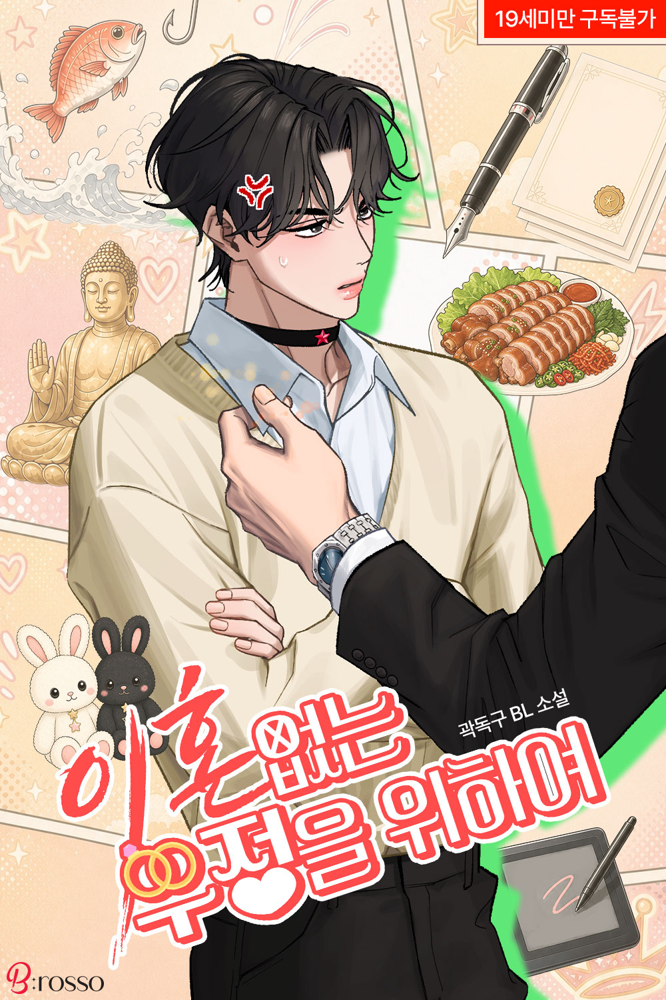
이혼 없는 우정을 위하여
For a Friendship Without Divorce
작가: 곽독구
Author: Gwag Dok-gu
BL 웹소설
BL Novel
구성: 단권 (전자책 약 11.6만 자, 리디 독점)
Format: Single Volume (eBook approx. 116k characters, Ridi Exclusive)
부모의 실패한 사랑을 보고 자라 '사랑' 대신 '영원한 우정'이라는 기괴한 종신계약에 집착하는 재벌가 부회장 권이겸과, 그에게 고백을 거절당한 뒤 어처구니없는 우정 타령과 집착을 다 받아주면서도 주도권을 쥐고 조련하려는 일러스트레이터 남승원의 아슬아슬하고도 달달한 현대 오메가버스 로맨스.
Raised watching his parents' failed romance, Gwon I-gyeom—vice chairman of a chaebol—becomes obsessed with a bizarre, lifelong contract of 'eternal friendship' instead of love. Nam Seung-won, an illustrator who rejected his confession, tolerates his absurd friendship antics while subtly taking control. A sweet and thrilling modern Omegaverse romance.
리디북스에서 보기
View on Ridi
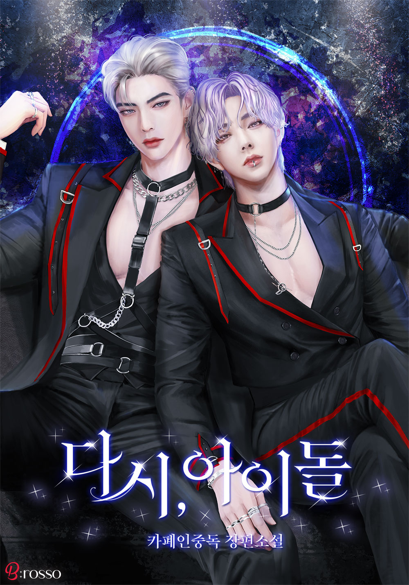
1. 다시, 아이돌
1. Idol Again
작가: 카폐인중독
Author: Caffeine Addiction
BL 웹소설
BL Novel
구성: 장편 연재작
Format: Serialized Novel
순전히 빚을 지지 않기 위해 마지못해 오디션 프로그램으로 도망쳤던 재경. 어차피 떨어질 생각으로 가만히 눈에 띄지 않으려 했으나, 의도와 달리 점점 빛을 발하며 아이돌 판에 휘말리게 되는 치열하고 흥미진진한 연예계 성장 로맨스.
Jae-gyeong reluctantly flees to an idol audition program purely to avoid falling into debt. Intending to get eliminated quietly without standing out, he unexpectedly begins to shine and gets swept into the fierce and exciting entertainment industry romance.
리디북스에서 보기
View on Ridi
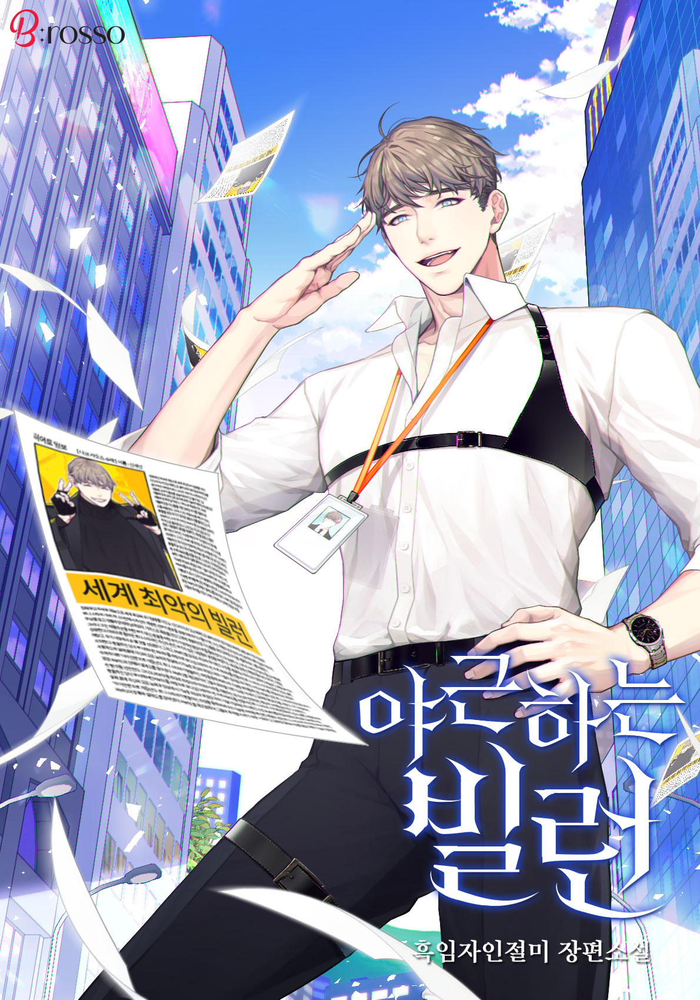
2. 야근하는 빌런
2. Overtime Villain
작가: 흑임자인절미
Author: Black Sesame Injeolmi
BL 웹소설
BL Novel
구성: 장편 연재작 (외전 포함)
Format: Serialized Novel (Includes Side Stories)
★ 특이사항: 태국 번역 출간 중
★ Note: Currently published in Thailand
영웅과 빌런이 존재하는 세상 속에서, 뜻하지 않게 빌런으로서 끊이지 않는 야근과 격무에 시달리며 고군분투하는 주인공의 처절하면서도 유쾌한 일상을 그린 흥미진진한 현대 판타지 BL 작품.
In a world of heroes and villains, a protagonist unexpectedly ends up as a villain suffering through endless overtime and grueling work. A hilarious yet desperate modern fantasy BL about surviving daily workplace struggles.
리디북스에서 보기
View on Ridi
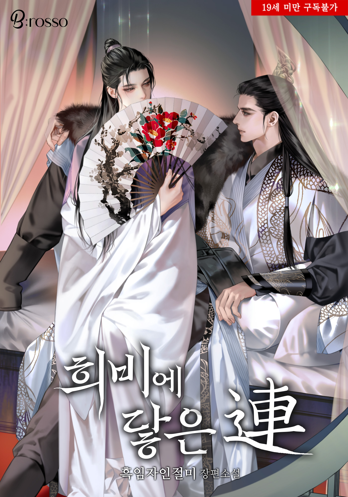
3. 희비에 닿은 연(連)
3. Yeon, Touched by Hee-bi
작가: 흑임자인절미
Author: Black Sesame Injeolmi
BL 웹소설
BL Novel
구성: 장편 연재작 (리디 독점)
Format: Serialized Novel (Ridi Exclusive)
★ 특이사항: 태국 수출 확정 작품
★ Note: Export to Thailand confirmed
태백문의 장로이자 성십삼좌의 자리에 오른 초로의 고수 '희비연'이 30년 전 벌어진 혈사의 범인으로 누명을 쓰게 되면서 벌어지는 이야기. 운명의 얽힘 속에서 진실을 찾아가고 감정의 연을 맺어가는 과정을 담은 무협 기반 BL 작품.
Hee Bi-yeon, an elder of the Taebaek Sect and master of the Sacred Thirteen, is framed for a bloodbath that occurred 30 years ago. A Wuxia BL novel detailing his journey to uncover the truth and form emotional bonds amidst tangled fates.
리디북스에서 보기
View on Ridi
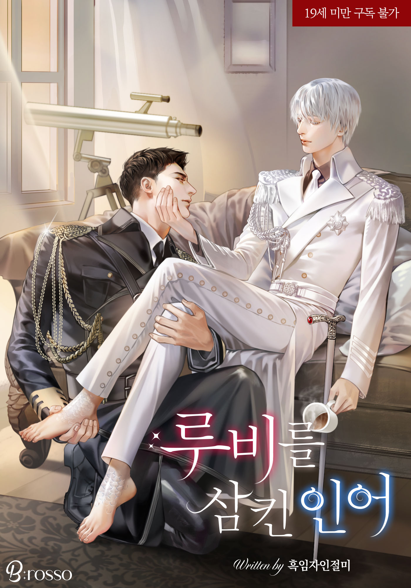
4. 루비를 삼킨 인어
4. The Mermaid Who Swallowed a Ruby
작가: 흑임자인절미
Author: Black Sesame Injeolmi
BL 웹소설
BL Novel
구성: 총 149화 (완결, 리다무 연재작)
Format: 149 Episodes (Completed, Ridi Daily Serial)
군부의 실험으로 인어가 될 수 있는 체질을 지닌 아카데미 출신 헤리엇 알스터와, 그를 향해 7년 동안 지독한 집착과 짝사랑을 품어온 전쟁영웅 엔저 맥과이어의 이야기. SF 판타지 BL 작품.
Herriot Alster, an academy graduate whose body was modified into a merman through military experiments, meets Enzer McGuire, a war hero who has harbored an intense obsession and unrequited love for him for 7 years. An SF fantasy BL story.
리디북스에서 보기
View on Ridi
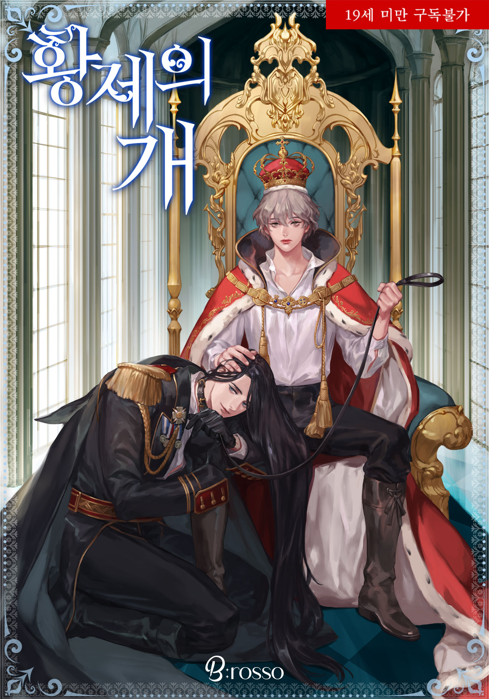
5. 황제의 개
5. The Emperor's Dog
작가: 흑임자인절미
Author: Black Sesame Injeolmi
BL 웹소설
BL Novel
구성: 총 298화 (완결, 리다무 연재작)
Format: 298 Episodes (Completed, Ridi Daily Serial)
천수를 다하고 눈을 감은 정복왕 황제 일렉트로는 자신이 거두어 키웠던 사냥개 같은 대공 베르로웬의 근위 기사 메르웰의 몸으로 눈을 뜨게 된다. 정체를 숨긴 채 펼쳐지는 유쾌하고도 짜릿한 판타지 로맨스 BL.
Conqueror Emperor Electro passes away after living a full life, only to wake up in the body of Merwell, a royal knight under his former loyal hound, Archduke Berlowen. A delightful and thrilling fantasy romance BL as he navigates life while keeping his identity hidden.
리디북스에서 보기
View on Ridi
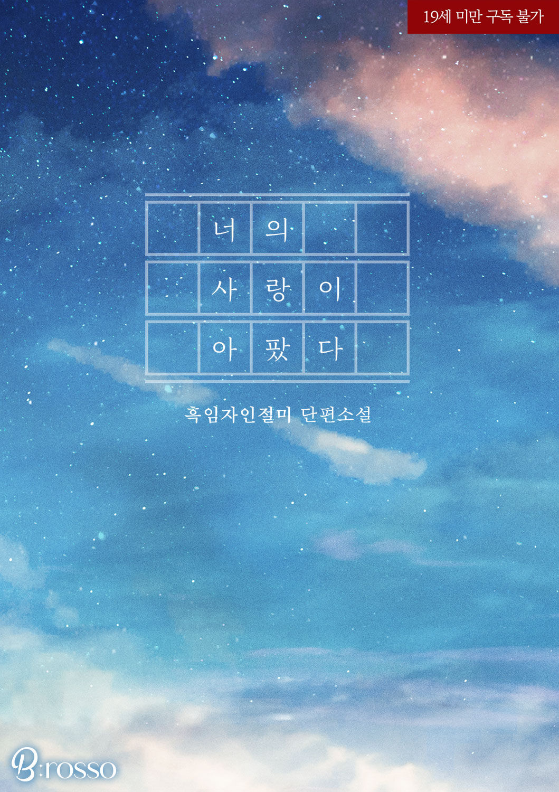
6. 너의 사랑이 아팠다.
6. Your Love Hurt
작가: 흑임자인절미
Author: Black Sesame Injeolmi
BL 웹소설
BL Novel
구성: 단권 (전자책 약 3.8만 자)
Format: Single Volume (eBook approx. 38k characters)
가난과 장애 속에서 상처 입은 소년 정태와 그에게 구원이 되어준 인우. 행복을 꿈꿨으나 도망쳐야 했던 정태, 그리고 8년 뒤 의사가 되어 노숙자가 된 정태를 발견하고 붙잡는 인우의 애절한 재회 로맨스.
Jeong-tae, a boy scarred by poverty and disability, finds salvation in In-woo. Though they dreamed of happiness, Jeong-tae was forced to run away. Eight years later, In-woo becomes a doctor and reunites with Jeong-tae, who is now homeless, holding onto him in this poignant romance.
리디북스에서 보기
View on Ridi
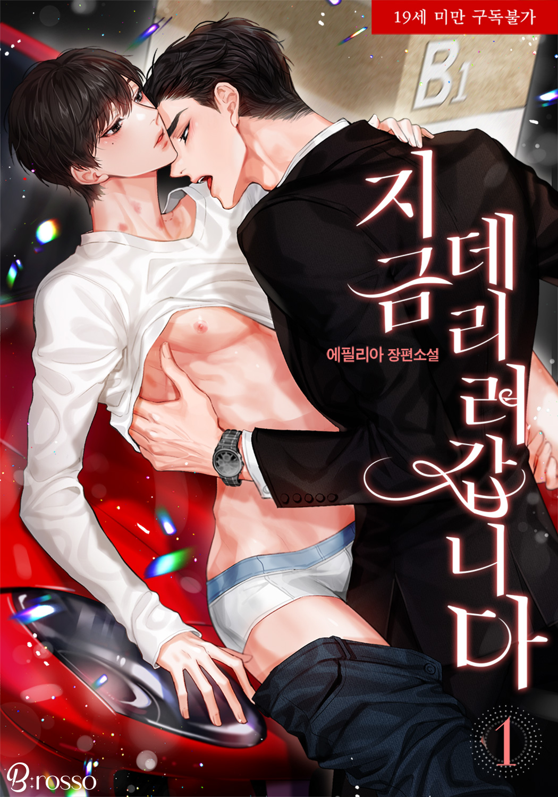
7. 지금 데리러 갑니다
7. Coming to Pick You Up Now
작가: 에필리아
Author: Ephelia
BL 웹소설
BL Novel
구성: 총 2권 (완결)
Format: 2 Volumes (Completed)
대리운전 알바를 하던 대학생 윤지우와 우연한 원나잇으로 얽힌 해운회사 대표 서진욱의 이야기. 매일 밤 대리운전을 부르며 직진하는 재력가 공과 애정을 거부하는 철벽 수의 아슬아슬한 로맨스.
Yoon Ji-woo, a college student working part-time as a designated driver, gets involved with Seo Jin-wook, CEO of a shipping company, after a one-night stand. A romance between a wealthy man who calls for a driver every night to pursue his feelings and a cautious student who resists affection.
리디북스에서 보기
View on Ridi
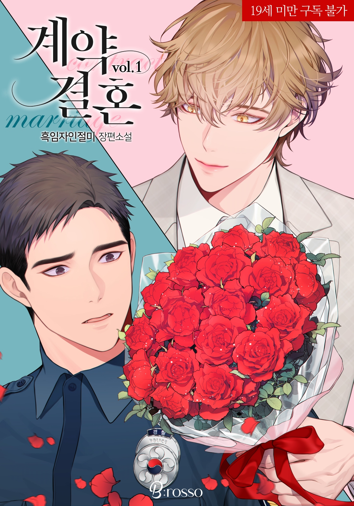
8. 계약 결혼 (개정증보판)
8. Contract Marriage (Revised Edition)
작가: 흑임자인절미
Author: Black Sesame Injeolmi
BL 웹소설
BL Novel
구성: 총 3권 (완결, 개정증보판)
Format: 3 Volumes (Completed, Revised & Expanded)
국가의 의무에 따라 3년간 강제 결혼을 하게 된 탑배우 원의제와 평범한 소시민 서이범. 철저한 계약 관계 속에서 이범의 비밀을 눈치채며 파고드는 의제 사이의 아슬아슬한 동거와 감정 변화를 그린 오메가버스 로맨스.
Top actor Won Ui-je and ordinary citizen Seo I-beom enter a forced 3-year contract marriage by national law. Within their strict contractual dynamic, Ui-je uncovers I-beom's secret, leading to emotional changes in this Omegaverse romance.
리디북스에서 보기
View on Ridi
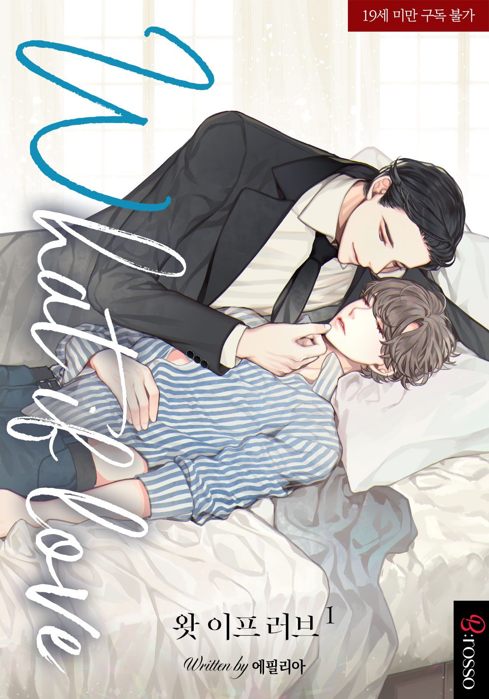
9. 왓 이프 러브 (What if love)
9. What If Love
작가: 에필리아
Author: Ephelia
BL 웹소설
BL Novel
구성: 총 6권 (완결)
Format: 6 Volumes (Completed)
★ 특이사항: 차기작 출간 예정
★ Note: Next work scheduled for release
유럽 여행 끝에 모스크바에서 낙오된 대학생 강준영과 우연히 그를 도와준 현성 자동차 이사 박태준. 불면증을 겪는 태준이 준영과 함께하며 서로를 향한 마음을 숨긴 채 싹트는 쌍방삽질 힐링 로맨스.
Kang Jun-young, a college student stranded in Moscow at the end of his European trip, meets Park Tae-jun, a director at Hyunsung Motors who helps him. Tae-jun, who suffers from insomnia, finds peace with Jun-young as feelings blossom in this heartwarming romance.
리디북스에서 보기
View on Ridi
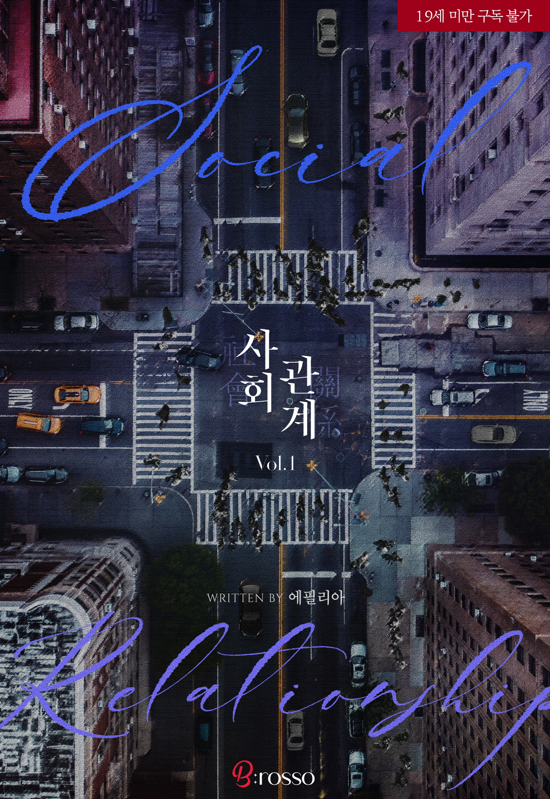
10. [개정판] 사회관계
10. Social Relations [Revised Edition]
작가: 에필리아
Author: Ephelia
BL 웹소설
BL Novel
구성: 총 4권 (완결, 개정판)
Format: 4 Volumes (Completed, Revised)
한서해운 회계 팀 신입 사원 면접 자리에서 한 달 전 원나잇으로 격렬한 밤을 보냈던 팀장 김재형을 다시 만나게 된 박지민의 이야기. 청년 가장이자 과거의 상처로 마음을 닫은 지민이 철저히 선을 긋음에도 불구하고, 능력과 재력을 모두 갖춘 재형이 저돌적으로 다가와 그의 상처를 보듬고 구원해 주는 아슬아슬하면서도 애절한 사내 연애 로맨스 BL 작품.
Park Ji-min attends a job interview for the accounting team at Hanseo Shipping, only to meet Kim Jae-hyeong—the team leader with whom he shared an intense one-night stand a month prior. A workplace romance where Jae-hyeong persistently pursues and comforts Ji-min, who keeps his heart guarded due to past scars.
리디북스에서 보기
View on Ridi
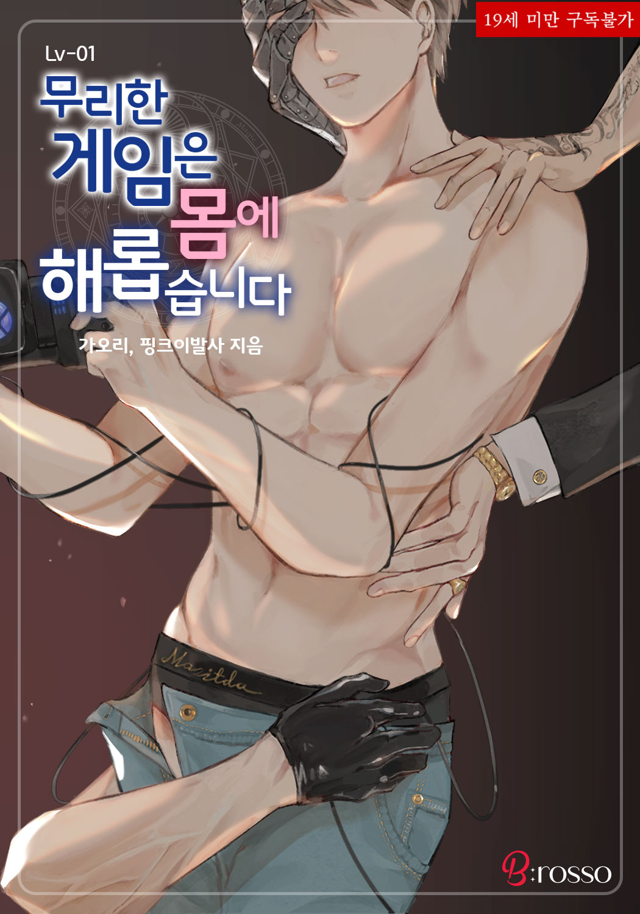
11. 무리한 게임은 몸에 해롭습니다 Lv.1
11. Excessive Gaming is Harmful to Your Health Lv.1
작가: 핑크이발사, 가오리
Author: Pink Barber, Gaori
BL 웹소설
BL Novel
구성: 총 1권 (완결)
Format: 1 Volume (Completed)
과제 자료 조사를 하다가 얼떨결에 막대기 게임 챔피언 리그에 휘말리게 된 선호와 현승의 이야기(<막대기 게임>), 그리고 가상 현실 게임을 샀다가 짝퉁 BL 게임 속에 갇혀 온갖 수난과 민망한 상황을 겪으며 로그아웃을 위해 고군분투하는 이야기(<내가 알던 게임이 짝퉁 BL 게임인 건에 대하여>) 두 가지 기발하고 발칙한 에피소드로 묶인 개그 판타지 BL 작품.
Featuring two whimsical stories: 'Stick Game', where Sun-ho and Hyun-seung accidentally get swept into a stick game championship while doing research, and 'I Thought It Was Just a Knockoff BL Game', where a player gets trapped in a knockoff BL game and struggles to log out amidst hilarious ordeals.
리디북스에서 보기
View on Ridi
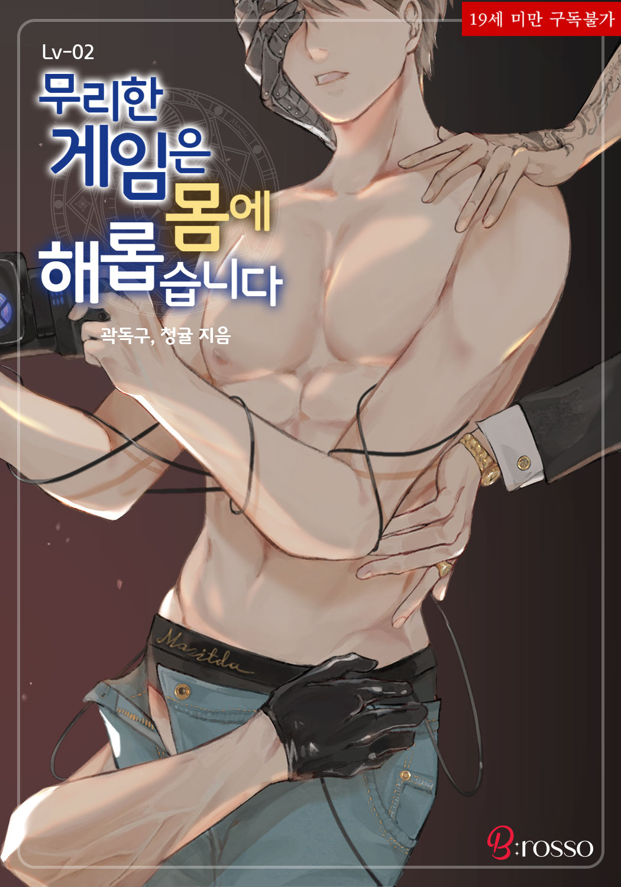
12. 무리한 게임은 몸에 해롭습니다 Lv.2
12. Excessive Gaming is Harmful to Your Health Lv.2
작가: 곽독구, 청귤
Author: Gwag Dok-gu, Cheonggyul
BL 웹소설
BL Novel
구성: 총 1권 (완결)
Format: 1 Volume (Completed)
평소 즐기던 게임 속에서 우연히 '애욕의 토템'을 활성화했다가 직접 게임 속 토템으로 빙의해 버린 이담의 이야기(<내가 토템이라니>), 그리고 집에 돌아가기 위해 질색하는 상대와 브로맨스 히든 엔딩을 보기 위해 기꺼이 망가질 각오로 게임을 헤쳐 나가는 선우의 이야기(<누가 좀비게임에서 브로맨스 엔딩을 보는데>)를 담은 유쾌하고 발칙한 게임 판타지 BL 작품.
A collection featuring 'I'm a Totem?!', where I-dam activates a totem in his favorite game and gets reincarnated as an actual in-game totem, and 'Who Reaches a Bromance Ending in a Zombie Game?', following Sun-woo's hilarious efforts to clear a zombie game with a bromance ending.
리디북스에서 보기
View on Ridi
13. 무리한 게임은 몸에 해롭습니다 Lv.3
13. Excessive Gaming is Harmful to Your Health Lv.3
작가: 핑크마스터, 에필리아
Author: Pink Master, Ephelia
BL 웹소설
BL Novel
구성: 총 1권 (완결)
Format: 1 Volume (Completed)
친구들이 만든 성인 MMORPG 베타 테스터를 맡았다가 소환한 NPC가 알고 보니 친구들이어서 당황하고, 게임 이후에도 몸에 남은 묘한 열기와 수난을 겪게 되는 채율의 이야기(<게임보다 현실이 좋아>), 그리고 금전적 보상에 혹해 참가한 성인 VR 게임 베타 테스트에서 민망한 미션들을 수행하며 현실의 친구 성훈과도 묘하게 얽히게 되는 도윤의 이야기(<환상 게임>)가 담긴 발칙하고 유쾌한 게임 판타지 BL 작품.
Includes 'I Prefer Reality Over Games', where Chae-yul beta-tests his friends' adult MMORPG only to find out the summoned NPCs are his real-life friends, and 'Illusion Game', where Do-yoon participates in an adult VR game test for money and completes embarrassing missions with his real-life friend Seong-hoon.
리디북스에서 보기
View on Ridi